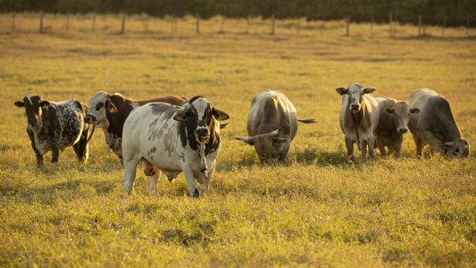

Pecuária
Tipos de boi na Pecuária

Valores em media
A raça Angus custa em media R$ 4.350, Nelore custa em media R$3.220, Brahman custa em media R$ 10.950, Brangus a média geral foi de quase R$ 23.000,00 para os touros e R$ 12.000,00 para as matrizes, Charolês custa em media R$ 90 o quilo.